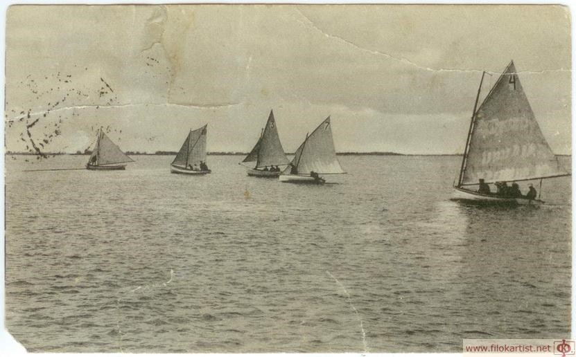
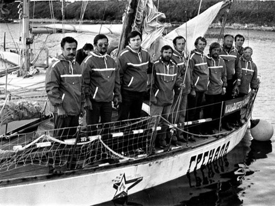

История Архангельского речного яхт-клуба
К образованию в Архангельске собственного яхт-клуба любители водных видов спорта шли почти тридцать лет. Сохранились сведения, что первые парусные гонки в Архангельске состоялись на карбасах в 1870 году. Флот участников был разделен на пять групп – по числу гребцов на карбасе, победителю каждой из них вручались призы.
На рубеже XIX — XX века, на Двине регулярно устраивались парусные гонки, но развитию парусного спорта в Архангельске мешало отсутствие безопасной гавани. В начале ХХ века «группа лиц», радеющих за развитие парусного спорта, обратилось в Архангельское Городское Общественное Управление с просьбой о ходатайстве перед Управлением порта «… об устройстве в городе шлюпочной гавани». В качестве наиболее удобного для ее размещения места был предложен участок между улицами Воскресенской и Полицейской (современная ул. Свободы).
Зарождение парусного спорта
В отсутствие интереса со стороны властей, эта самая группа решила, как говорится в прошении, поданном на имя Начальника Архангельского Торгового порта А.Новинского, «… хоть сколько-нибудь улучшить условия стоянки шлюпок своими средствами». С этой целью в 1908 г., в уже избранном любителями парусного спорта месте, был обустроен плавучий бон. Этого ограждения оказалось недостаточно…
В 1909 г. «убежище» для шлюпок поставили в более спокойное место - между пристанями Торгово-Мореходного и Технического училищ (сейчас здания этих учреждений занимает Институт экологических проблем Севера - К.Т.). Но и здесь установки бона оказалось явно недостаточно. Через год после первого укрепления, территорию между училищами укрепили особым барочным днищем, несколько защищавшим шлюпки от бурь.
Именно здесь яхт-клуб и начал свою деятельность. Участок близ ветхой пристани был передан в ведение любителей гребного и парусного спорта в 1909 г. по ходатайству Федора Бломсфельда, одного из видных представителей купеческого мира Архангельска, в Управление Архангельского порта.
.webp)
В 1909 — 1910 гг. стали возводить сооружения для защиты судов от бурь близ Воскресенской пристани и у пристани напротив Архангельского Торгово-мореходного училища.
По их окончании, в 1910 г. был организован первый Архангельский кружок любителей парусного спорта, который в летнюю навигацию того же года устроил 8 парусных и 2 гребные гонки, в которых участвовало 22 судна. Было выбрано особое жюри, выработаны простейшие правила соревнований. На основе кружка и был создан Архангельский яхт-клуб.
.webp)
Проект Устава, на основании Закона от 4 марта 1906 г., был представлен Архангельскому губернатору при прошении за подписью 20 человек. 10 июня 1911 г. он был внесен в реестр об обществах Архангельского губернского присутствия за подписью Управляющего губернией вице-губернатора А.Ф. Шидловского. Первоначально яхт-клуб имел 20 членов (учредителей), к 31 октября 1911 г. был 1 почетный член, 70 действительных членов, 2 кандидата в действительные члены. Командором клуба был В.В. Гувелякен, вице - командором — Э.И. Шмидт (он же — председатель Гоночной комиссии). Наряду с членами Гоночной комиссии, Общим собранием 21 июня 1911 г. были избраны их заместители с тем, чтобы первым была предоставлена возможность участвовать в состязаниях. Вступительный взнос составлял 3 рубля, членский — 5-10 руб. в год.
Поскольку в 1911 г. своего помещения у яхт-клуба еще не было, то заседания Комитета проходили в здании Архангельского Биржевого комитета (более известного в наше время как Марфин дом), а заседания Гоночной комиссии и Общие собрания — в здании Архангельского торгово-мореходного училища.

Проблемы с гаванью и дноуглубительные работы
Самой главной проблемой яхтсменов стали отмели, распространявшиеся на значительную часть выбранной ими гавани. Во время отливов, зачастую, суда в гавани не имели возможности выйти на большую воду. Во время засухи лета 1912 г., суда застревали в гавани даже в прилив. В период же отлива некоторые яхты из-за недостатка воды, ложились на грунт.
Впервые о необходимости дноуглубительных работ в гавани между пристанями Торгово-мореходного и технического училищ яхтсмены заговорили еще в январе 1911 г. Без дноуглубительных работ, - отмечала в своем прошении на имя Начальника Архангельского Торгового порта А.Бескровного инициативная группа любителей парусного, гребного и моторного спорта, - дамбу для защиты мелких судов от бурь и сильных ветров пришлось бы возводить на довольно значительном расстоянии от берега. Излишнее удлинение защитных укреплений не лучшим образом отразится на их стоимости. Кроме того, удаленность дамбы сделает гавань слишком большой. Чтобы подобных неприятностей избежать, по мнению яхтсменов, необходимо сделать «выемку бассейна» шлюпочной гавани объемом 300-400 кубических саженей (2914-3885 кубических метров) земли. И сделать эту самую выемку необходимо за счет казенных средств, поскольку ни у одного частного заинтересованного лица нет подходящих машин. Казенными эти работы должны быть еще и потому, что в дноуглублении у берега заинтересованы не только любители парусного и гребного спорта, но и весь город.
Дноуглубительные работы в гавани яхт-клуба начались лишь в конце навигации 1913 г. До этого времени Начальник работ по улучшению Архангельского порта С. Кирпичников, в своих посланиях новому Начальнику Архангельского Торгового порта А. Новинскому, призывающему своего коллегу помочь яхт-клубу в самом ближайшем будущем, отвечал, что помощь оказать нет никакой возможности: все землесосы заняты на других, не менее важных дноуглубительных работах.
Устав и правила клуба
По Уставу, клуб был учрежден «с целью развития на Северной Двине и на взморье (в пределах Архангельской губернии) водного спорта: гребного, парусного, парового и моторного и усовершенствования постройки типов судов... Общество имеет в виду содействовать... развитию всякого рода гимнастических упражнений и других видов спорта».
Несмотря на серьезные проблемы с мелями в гавани, Архангельский яхт-клуб в июне 1911 г. начал свою работу. Яхт-клуб состоял из почетных и действительных членов, а также, и членов - сотрудников. Почетные члены избирались Общим собранием по представлению Комитета яхт-клуба, освобождались от вступительных и ежегодных взносов. Члены-сотрудники избирались Общим собранием по представлению Комитета; им предоставлялось право бесплатного входа и совещательного голоса, но при этом через два года они могли быть отчислены. В клуб допускались лица всех сословий мужского пола, за исключением несовершеннолетних, учащихся низших и средних учебных заведений, нижних воинских чинов, а также «опороченных по суду», находящихся под надзором полиции, исключенных из других обществ и клубов в течение 5 лет со дня исключения. Для вступления в клуб следовало заручиться рекомендацией двух членов, и пройти тайное голосование на Общем собрании. При выборах кандидат вносил определенную плату и на время голосования не имел права входа в помещение Общества. В случае отрицательного голосования кандидату возвращались деньги, а выставлять свою кандидатуру он мог не ранее, чем через год. При выборах кандидата должен был присутствовать один из поручившихся. Если выяснялось, что кандидат не мог баллотироваться, то поручившиеся платили штраф в 25 рублей, а при повторном прецеденте теряли право выдвижения кандидатов.
Главным распорядительным органом было Общее собрание, рассматривавшее все предложения по представлению Комитета. Последний обязан был довести предложения до Общего собрания, в случае, если они поступали за подписью не менее, чем 5 членов. Комитет управлял текущими делами, состоял из командора, вице - командора, 4-х членов и 2-х кандидатов к ним. Командор, вице - командор и члены Комитета избирались только из судовладельцев, на два года Общим собранием. Вице - командор был председателем комиссии о гонках.
Нарушители Устава подвергались штрафу: в первый раз — 10 руб., во второй раз — 20 руб. При третьем нарушении проштрафившийся член клуба предлагался к исключению на Общем собрании.
Выдающиеся члены клуба
Состав клуба, как и всего архангельского общества, был многонациональным, что было обусловлено торговым характером города-порта, а также местонахождением у западных границ Российской Империи. Среди членов клуба значительное место занимали выходцы из Северной Европы. Многие яхтсмены занимали ведущие позиции в общественной и финансовой жизни города.
.webp)
Командор клуба Вильгельм Вильгельмович Гувелякен (1857 — 1930), купец 2-й гильдии, потомственный почетный гражданин Архангельска, был совладельцем предприятий Суркова и Шергольда (так же членов яхт-клуба), директор-распорядитель и совладелец товарищества «Кемские лесопильные заводы».
Он был городским головой Архангельска в 1895—1903 и в 1914—1917 гг., а в марте-апреле 1917 г. — временным губернатором Архангельска, затем губернским правительственным комиссаром. В марте 1917 г. он огласил телеграмму об отречении царя, сначала на заседании городской думы, а затем перед собравшимися манифестантами.
Состоял непременным членом Архангельского губстаткомитета, председателем Архангельского биржевого комитета (где в 1911 г. проходили заседания Комитета яхт-клуба).
Состоял также в правлении Архангельского общества изучения русского Севера, избирался почетным мировым судьей Архангельской губернии, членом Губернского по фабричным и горнозаводским делам присутствия, председателем попечительского совета Архангельского торгово-мореходного училища, где так же одно время заседал яхт-клуб.
.webp)
В.В. Гувелякен был награжден золотой медалью «За усердие» на Станиславской ленте и знаком Красного Креста.
Членом клуба был Эдмунд Яковлевич Клафтон (1862 — 1919), купец, выходец из купеческого рода английского происхождения. Дед его — Мойзес Клафтон (1806 — 1868) в конце XVIII в. приехал в Россию из Ливерпуля, был купцом 3-й гильдии, в 1799 г. основал в Архангельске канатную фабрику. Сам Э.Я. Клафтон был купцом уже 2-й гильдии, по наследству владел той же канатной фабрикой. Состоял в родственных отношениях с семейством городских купцов Линдес, представители которого также входили в Архангельский яхт-клуб. Э.Я. Клафтон был товарищем председателя Сиротского суда; в начале ХХ в. — почетный гражданин г. Архангельска.
В клубе состоял и И.В. Кривоногов (1866 — 1918), врач, член Государственной Думы IV созыва, кадет. Окончил Военно-медицинскую академию, служил врачом в Особом отделении Пограничной стражи. Вступив в партию конституционных - демократов, вышел в отставку, но продолжал заниматься частной медицинской практикой. Какое-то время был гласным Архангельской городской думы, где возглавлял училищную комиссию.
В клубе состояли Густав, Егор и Петр Федоровичи Линдесы — городские купцы. Их дед — Георг Эдуард (Егор Иванович)(1808 — 1872) был сыном лютеранского пастора в Архангельске. Фердинанд (Федор) Егорович основал торговый дом; с 1894 г. — почетный гражданин Архангельска. В начале ХХ в. дети Ф.Е. Линдеса были акционерами северного пароходного общества «Котлас — Архангельск — Мурман», имели два лесозавода на р. Маймаксе в Архангельском уезде, Архангельской губернии.
.webp)
Членом клуба был Карл Юрьевич Спаде (1879 – 1917) — уроженец Курляндии, моряк, архангельский рыбопромышленник, один из зачинателей тралового лова на Севере России. В 1905 году штурман ледокола «Ермак», участвовал в экспедиционном плавании по Северному морскому пути, после чего остался в Архангельске. В 1910 году основал фирму «Русские северные морские промыслы К.Ю.Спаде – траловый лов и рыбная торговля». К.Ю. Спаде активно колонизировал Мурман, где и основал несколько факторий.
Среди членов клуба числился Альберт Юльевич Сурков (1848 — 1917) — купец 1-й гильдии, потомственный почетный гражданина г. Архангельска.
А.Ю. Сурков родился в семье аптекаря, окончил медико-хирургическую академию в Санкт-Петербурге.
Вместе с купцом Шергольдом (некоторые представители этой фамилии также входили в Архангельский Яхт-клуб) создал ряд предприятий: "Товарищество Архангельского пивоваренного завода"(1879); "Торговый дом Сурков и Шергольд"(1881); "Товарищество Кемских лесопильных заводов"(1891) и др. Был гласным городской думы, почетным мировым судьей, почетным членом Архангельского общества изучения русского Севера. Имел награды, в том числе и норвежский орден Св. Олафа, который получил за содействие норвежской арктической экспедиции, профессор Биркеланда.
Состоял в клубе и Ф.Ф. Прютц — инициатор создания одноименного лесопромышленного общества, которое открылось в начале 1917 г. Во владении фирмы было два лесопильных завода (в Онеге и в Маймаксе). Фирма упразднилась летом 1917 г., тогда же был организован «Русснорвеголес» (на базе упраздненной фирмы) — лесная концессия, выкупленная Северолесом в 1928 г.
.webp)
Значительное место среди Архангельских лесопромышленников занимал и другой член яхт-клуба — Эдмунд Александрович дес-Фонтейнс (1866 — 1938).
Это был выходец из французского дворянского рода. Его предки в XVII в., будучи гугенотами, переселились в Голландию; в конце того же столетия обосновались в России, в Архангельске. Таким образом, Э.А. дес - Фонтейнс был коренным архангелогородцем, несмотря на французское происхождение. Он был лесопромышленником, владельцем лесозавода в Маймаксе (с 1920 г. — лесозавод № 2). Его дядя — Эдуард Абрамович дес-Фонтейнс одно время был городским головой Архангельска (1868 — 1871).
В клубе состоял Андрей Степанович Чудинов (1860 — 1934) - лесопромышленник Севера. В его собственности были Цигломенский (до 500 рабочих) и Кегостровский лесозаводы, 8 пароходов.
В яхт-клубе состояли представители семейства Шергольдов. Это купеческий род британского происхождения. Георг (Егор) Яковлевич Шергольд в 1798 г. прибыл в Архангельск. Его сын — Иван Егорович (1827 — 1879) — 1-й гильдии купец — был английским консулом в Архангельске. Внук — Егор Иванович (1860 — 1921) — член яхт-клуба — 2-й гильдии купец, деловой партнер вышеупомянутого А.Ю. Суркова. Е.И. Шергольд также был гласным городской думы, почетным мировым судьей, налоговым инспектором.
В клубе состоял и шведский предприниматель О.О. Вагер (1888 — 1965). Был управляющим голландского общества лесной торговли «Альциус и К» преемники». Был женат на дочери члена яхт-клуба Р.И. Шергольда. С 1918 г. жил в Швеции. В начале 1920-х гг. снова оказался в Архангельске, где с 1922 г. был директором-распорядителем концессионального общества «Руссголландлес». Одновременно (до 1928 г.) — шведский вице-консул в Архангельске.
Помимо купцов и промышленников, среди членов клуба были и инженеры, ученые-естественники, этнографы, занимавшиеся изучением русского Севера.
.webp)
Членом клуба был Карл Александрович Лоренц (1874 — 1938) — ученый-естественник, исследователь Новой Земли. В 1903 г. окончил Юрьевский (Тартуский) университет, стал провизором.
Заведовал аптекой при Архангельской больнице общественного призрения (ныне 1-я городская больница). Преподавал в Архангельской медицинской школе, на курсах медсестер при Общине Красного креста.
В 1909 г. участвовал в экспедиции В.А. Русанова на Новую Землю; открыл Новоземельный вид папоротника, обнаружил там ранее неизвестную популяцию шмелей. Один из островов архипелага назван именем Лоренца. Занимался этнографией ненцев, записывал и публиковал их сказки. Был членом общины Красного Креста (с 1898 г.), общества врачей (1903 — 1920), Фотографического общества. Восемь раз спасал утопающих на воде (некоторые прецеденты зафиксированы в отчетах яхт-клуба).
Среди известных лиц, состоявших в яхт-клубе, можно назвать Петра Герардовича Минейко (1868 — 1920) — инженера Архангельского порта.
.webp)
П.Г. Минейко преподавал в архангельском Механико-техническом училище им. Петра Великого; с 1913 г. — начальник управления работ по улучшению Архангельского торгового порта. Проектировал здание городского холодильника для хранения рыбной продукции, которое было возведено в 1915 г. Такое архитектурно-инженерное сооружение было весьма актуально в период Первой мировой войны. П.Г. Минейко был гласным городской думы, членом губернского статистического комитета, членом Архангельского комитета Императорского общества Судоходства. Открыл Архангельский портовый завод.
В клубе состоял врач-благотворитель И.И. Остроумов (1858 — 1912), выходец из семьи священника. Учился в Симбирской гимназии, затем на Медицинском факультете Казанского университета. После учебы приехал в Архангельск, где 27 лет проработал врачом. Оказывал медицинскую помощь рабочим лесопильных заводов. Участвовал в деятельности общества Красного Креста в Архангельске, содержал несколько бесплатных коек.
Среди членов клуба в отчете за 1913 г. упоминается В.Я. Лейцингер (1888-1938), сын Я.И. Лейцингера (1855 — 1914) — известного человека в дореволюционном Архангельске. Я.И. Лейцингер был внуком сыровара из Швейцарии; в 1903 — 1914 гг. городской голова Архангельска. Я.И. Лейцингер был председателем правления Архангельского фотографического общества, одним из лучших городских фотографов конца XIX — нач. ХХ вв.
Таким образом, с яхт-клубом были связаны лучшие люди в городе, проявившие себя в разных направлениях, а также их родственники.
.webp)
Почетным членом Клуба в 1911 году был избран Архангельский губернатор Иван Васильевич Сосновский (1868 - ?)
И.В. Сосновский в 1890 году окончил юридический факультет Санкт-Петербургского университета с «дипломом первой степени» и поступил на службу в земский отдел Министерства внутренних дел. В 1893 году получил предложение на должность младшего чиновника по особым поручениям от назначенного архангельским губернатором А. П. Энгельгардта.
Пиком деятельности Сосновского стало губернаторство в Архангельске, на которое он, уже статский советник, был назначен по предложению П. А. Столыпина. За годы его деятельности на этом посту было много сделано для укрепления и развития суровой окраины Российской империи. Активно развивался Архангельский порт, начал функционировать промысловый телеграф, связавший районы рыбных промыслов с центром, началось жесткое противостояние экспансии норвежских и финских промысловиков на Мурманское побережье, были предприняты решительные шаги по заселению Мурмана русскими людьми.
Форма и символика
Членам клуба, а также матросам и наемным работникам была присвоена форменная одежда, утвержденная Морским министерством 22 июля 1911 г.


Ту же форму разрешалось иметь из белой материи, с такими же белыми пуговицами, а так же надевать белую фуражку с белою шелковою тесьмою во весь околышек. Пальто полагалось темно - синее.
Для вольнонаемных капитанов, шкиперов, штурманов, механиков и их помощников форма такой же, как и у членов яхт - клуба, но прибор должен был быть металлическим, вызолоченным.
Матросы, служившие в клубе, носили фланелевую рубаху военного флотского образца, или фуфайку темно - синего цвета.
На левом рукаве рубахи был знак клуба, а на фуфайке на груди — название яхты, причем на рукаве знака не полагалось. Знак клуба вышивали на левом рукаве красным шелком. Над ним шли угловые нашивки (до трех), из которых каждая давалась матросу за выслугу двух лет у одного владельца, или на одной и той же яхте. Брюки были темно- синие. Фуражка была также темно - синей, без козырька, по флотскому образцу, с надписью названия яхты на черной шелковой ленточке, но без белых кантов. Ту же форму разрешалось иметь из белой материи, как это было установлено для матросов военного флота, и надевать на фуражки белые чехлы. Полагалось и укороченное пальто гражданского покроя, темно - синего цвета, двубортное, с металлическими форменными пуговицами и знаком на левом рукаве.
Боцманы и старшие машинисты имели ту же форму, как и матросы, но для отличия носили фуражку английского образца со знаком клуба и на левом рукаве укороченного пальто и фланелевой рубахи имели нашивки сверх знака, вышитого золотом.
Рисунки флагов и вымпелов яхт-клуба были утверждены приказом по Морскому ведомству от 5 августа 1911 г. № 241.
Почетные и действительные члены Клуба носили пиджак (укороченное пальто) гражданского покроя, темно-синего цвета, двубортный, с черными матовыми пуговицами.
Должностным лицам для отличия, полагались золотые узкие нашивки вокруг обшлага рукавов: командору — три, вице-командору — две, членам Комитета — одна. Жилет из той же материи как пиджак, или белый, с такими же пуговицами, но меньшего размера. Брюки темно-синие или белые. Была предусмотрена фуражка английского образца темно-синего цвета с черною шелковую тесьмою во весь околышек и прямым козырьком, над которым помещался знак клуба. Знак на форменные фуражки почетных и действительных членов был утвержден Архангельским губернатором 25 октября 1911 г.: «впереди между двумя (скрещивающимися бронзовыми флагштоками) треугольными белыми, с синим прямым крестом флагами, помещен круглый щит, на белом поле которого, окаймленном синей полосой, имеются бронзовые буквы.... наружные края флагов и щита, а равно граничные линии между синим и белым цветами, обнесены бронзовыми полосками; краски эмалевые».
.webp)
Выглядели они следующим образом:


Существовал и знак, присваиваемый судам яхт-клуба: «на белом круглом поле с синей каймой и синим стоячим крестом красные буквы: „А.Р.Я.К.“ по букве в каждом поле».
Печать клуба была с гербом города Архангельска и надписью «Архангельский речной Яхт-клуб». На судах клуба, помимо знака Общества, русскими буквами воспроизводились их названия.
В 1911 году в Российской империи было всего два яхт-клуба: «Невский» в Санкт-Петербурге и Феодосийский в Крыму. 11 сентября 1911 года (29 августа по старому стилю) появился третий. Официально был поднят флаг Архангельского речного яхт-клуба.

Первые годы работы
В 1911 г. гавань была временной, мелкой и небезопасной; охранялась сторожем-матросом. Частные суда держались в гавани клуба за определенную плату. В списках клуба в 1911 г. значилось 33 суда: 18 парусных, 4 парусно-гребных, 2 гребных, 8 моторных, 1 парусно-моторное (одно моторное судно было позднее исключено, т.к. было продано не члену яхт - клуба).
Парусные суда делились на четыре группы; за основу классификации бралась площадь парусности: соответственно более 33,3 кв.м., 21,2 кв.м., 15,4 кв.м. и менее 15,4 кв.м. В соответствии с правилами гонок, утвержденными 8 июля 1911 г., не члены яхт - клуба не имели права управлять судном на призовых состязаниях. Для каждой группы судов назначался отдельный приз в виде переходящего кубка. При этом не награждался победитель каждого отдельного состязания, а приз присуждался владельцу того судна, которое пришло первым наибольшее количество раз из семи гонок, устроенных во время навигации. Если победителем три года подряд оказывалось одно и то же судно при условии, что оно не перешло к другому владельцу, кубок становился собственностью владельца судна. Гонка каждой группы считалась состоявшейся, если в ней приняли участие не менее двух судов.
Суда при летучем старте огибали треугольник, сумма сторон которого составляла три мили.
Гребные суда делились на две группы: гоночные гички и все прочие (лодки, шлюпки, карбаса, ялики и др.).
Первые парусные гонки были устроены в 1911 г. Состоялось 7 гонок на призы переходящих кубков, 2 добавочные гонки, 3 непризовые гонки, 1 фигурная гонка на приз вице-командора. Призы-кубки были приобретены на средства яхт-клуба и вручены в день торжественного поднятия флага 29 августа. Они стоили 225 руб.
Гоночная дистанция представляла собой треугольник со сторонами, равными в общей сложности трем милям. В 1911 г., кроме начального пункта гонок, маршрут заездов обычно проходил близ Мосеева острова в Соломбале, улицы Полицейской и деревни Гневашево. Владельцы судов за право участия в гонке должны были заплатить. Плата варьировалась в зависимости от класса яхты. Маленьким судам первой группы, за право поучаствовать в соревновании приходилось отдавать по 30 копеек. Владельцы судов четвертой группы, в качестве стартовых денег, отдавали в казну клуба уже рубль.

Фактически это было официальное торжественное открытие яхт - клуба. Вот как описывается мероприятие, проходившее в этот день: «К торжеству, кроме членов Яхт - клуба, прибыли особо приглашенные гости. После молебна и освящения судов, кормовой флаг яхт-клуба торжественно; под звуки оркестра, был поднят на мачту на пристани Яхт-клуба. Торжество закончилось прогулкой по Двине на пароходе, где присутствовавшим был предложен завтрак. Средства на устройство праздника были собраны по подписке среди членов Яхт-клуба». Во время празднества были отправлены телеграммы за подписью управляющего губернией А.Ф. Шидловского, на имя министра Внутренних дел с просьбой повергнуть к стопам Его Императорского Величества верноподданнические чувства собравшихся; от командора яхт-клуба В.В. Гувелякена и членов Комитета — благодарственные телеграммы министрам Торговли и Промышленности и Морскому: первому — за содействие, оказанное при учреждении клуба Управлением Архангельского Торгового порта, второму — за утверждение рисунков яхт-клубских флагов. Так же послана была, за подписью В.В. Гувелякена, приветственная телеграмма, находившемуся в Санкт-Петербурге почетному члену клуба И.В. Сосновскому (камергеру Императорского двора, Архангельскому губернатору, единственному тогда почетному члену клуба).
Были получены и ответные поздравительные телеграммы от обоих министров, губернатора, и других приглашенных, но не явившихся гостей. На празднествах присутствовал Норвежский Королевский генеральный консул в Архангельске Г.К. Фальсен, как представитель местной норвежской колонии. Он заявил о намерении учредить особый приз от норвежцев, в виде кубка, для парусных гонок.
Устраивалось три вида гонок: парусные, моторные, гребные. В качестве призов, помимо кубков, выдавали жетоны, серебряные планочки для прикрепления к судну, столовые предметы из благородных металлов (бокал, спичечница и др.).
Флаг яхт-клуба украшал пристань общественного объединения не-долго. Уже 14 сентября, по завершению последней гонки сезона, он до начала следующей навигации был спущен. К концу первого сезона число действительных членов клуба увеличилось почти в три раза - до семидеся-ти человек.
Жизнь клуба до революции
Зимой навигации, конечно, не было, тем не менее, члены клуба находили, чем развлечься. Устав предполагал наличие буфета с винами и водками, бильярдом, тиром, кеглями, и иными дозволенными Правительством играми. Семейные музыкальные собрания с танцами можно было устраивать сколько угодно. Клуб по рекомендации членов могли посещать и гости.

В 1912 г. устраивались вечера в ресторане П.К. Минаева в Александровском Летнем Саду. Современники описывали это времяпровождение так: «Помещение г. Минаевым на эти вечера предоставлено было в исключительное пользование членов яхт-клуба. На вечерах могли присутствовать и гости по рекомендации членов Яхт-клуба. Карточная игра не допускалась. Беседы за товарищеским ужином являлись обычным занятием собравшихся. На одной из вечеринок демонстрировались волшебным фонарем картины из жизни яхт-клуба. Собирались по четвергам раз в две недели». С января по апрель 1912 г. было 8 вечеров. С февраля 1913 г. вечера стали проходить в доме Коммерческого собрания, так же по четвергам раз в две недели. 16 января 1913 г. здесь состоялся вечер «… с танцами и кабаре по разнообразной программе». Вечер этот имел большой успех среди архангельской публики.
Как и другие яхт - клубы, Архангельский речной обязан был оказывать помощь всем, находящимся в опасном или затруднительном положении на воде. И этот пункт устава действовал не только на бумаге. В 1913 г. член яхт-клуба Карл Александрович Лоренц у деревни Кег-Остров спас погибающих детей, питомцев местного Дома Трудолюбия. И это был не единственный случай, когда он спасал находившихся в беде.
В клубе устраивались и иные связанные с морским делом зрелищные мероприятия, помимо гонок. Так, 30 июля 1912 г. яхт - клуб принял участие в торжественной встрече колокола, который был привезен в Архангельск на английском пароходе «Кennet» для передачи русским властям. Этот колокол был захвачен англичанами на Соловецких островах, во время Крымской кампании, когда англичане, воевавшие в союзе с Турцией и Францией против Российской Империи в 1854 — 1855 гг., осаждали знаменитый русский монастырь и прилегающие территории Беломорья. Теперь, незадолго до Первой Мировой войны, эти некогда враждовавшие страны стали союзниками и демонстрировали соответствующие дипломатические жесты.
Во время встречи колокола в Архангельске 11 яхт членов яхт-клуба в кильваторной колонне продефилировали перед английским пароходом, прибывшим в Архангельский порт.

В 1913 г. устраивались поездки на клубных судах к морю, в частности в Соловецкий монастырь. Впервые яхтсмены Архангельского речного яхт - клуба сходили на Соловецкие острова на яхте "Сиддарта" в июне 1913 года.
Отчет о первом походе яхтсменов Архангельского речного яхт-клуба на Соловецкие острова опубликовала газета "Архангельск" в июле 1913 года.
«На парусной яхте в Соловецк и обратно»
На днях возвратилась из поездки в Соловецкий монастырь группа моряков-туристов, совершивших такую прогулку на яхте "Сиддарта" принадлежащей члену местного яхт-клуба Е. О. Вальневу. Парусная яхта "Сиддарта" отвалила от яхт-клубовской пристани 17 июня под яхт-клубовским флагом и под командою члена я\к Е. И. Патрушева, помимо которого на яхте отправились А. Гувельякен и студенты Ранек и Шошин.
Курс был взят не прямо на Соловецкий монастырь, т. к. туристы по плану поездки должны были обойти всю Унскую губу и посетить Пертоминский монастырь, что и было выполнено с пунктуальной точностью.
Море и погода вполне благоприятствовали, и туристы пережили не мало приятных моментов, любуясь красотами северного моря, на этот раз тихого и спокойного, близкого временами к полному штилю; мирный пейзаж оживляли нерпы: высовывая свои любопытные мордочки, они подплывали почти к самой яхте. В прибрежных селениях, куда заходила "Сиддарта", поморы с большим вниманием осматривали яхту и ее снаряжение и одобряли саму яхту и смелую команду. Весь путь, не считая времени на заходы и остановки, от Архангельска до Соловков яхта прошла за 31 час.
На обратном пути близ Жигуловского маяка "Сиддарту" захватил довольно сильный шторм, который яхта перенесла вполне молодецки, а насквозь промокшие туристы нашли гостеприимный приют на пароходе "Лейтенант Овцын", стоявший близ Пертоминского монастыря. Из-за шторма обратный путь занял 38 часов. Вся же прогулка в этом роде первая в Архангельске, заняла 7 дней, причем туристы помещались исключительно на яхте, только не на долго выходя на берег. Успех этой морской поездки не прошел бесследно в жизни местных спортсменов, и теперь, как нам передали, уже организуется более продолжительная поездка по Кандалакшскому заливу".
В 1913 г. член клуба А.Ю. Сурков устроил плаванье на моторном крейсере по р. Двине от фабрики «Сокол» (близ Вологды) до Архангельска.

«…1-го октября 1914 года, на поплавке Яхт-клуба состоялась раздача годичных призов. Переходящий кубок 4-го класса взяла яхта «Дарлинг» А. А. Шольца. Переходящий кубок 3-го класса взяла яхта «Пират» В. К. Пец. Переходящий кубок 2-го класса взяла яхта «Фидес» В. В. Ваганова. Норвежский кубок взяла яхта «Новелла» В. Р. Пец. Первый приз Спаде-Шольц взял В. Р. Пец и 2-й приз Спаде-Шольц взяла яхта «Тася» Г. И. Патрушева. После раздачи призов состоялся спуск флага, а затем была предложена закуска».
В 1916 г. клуб, несмотря на разгар Первой Мировой войны, торжественно отметил свой пятилетний юбилей. Первый юбилей клуба описал в своих воспоминаниях Л.В. Лейцингер: «Все в Яхт-клуб! Грандиозный праздник на воде! Парад всех судов, гонки, катания. В заключении состоится „вечер огня на воде“. Подробности — в афишах», — извещали архангелогородцев призывные листовки, приглашавшие прийти на набережную Северной Двины 5 сентября... Сотни горожан поспешили в этот день к Успенскому ковшу, чтоб понаблюдать за состязаниями. «…Подняли паруса... Все яхты были сработаны местной артелью «Якорь».
«…Потом начались гонки. Зрители бегали вдоль берега, кричали, свистели, подбадривая спортсменов, но они не замечали этого, потому что ветер в ушах свистел сильнее, громче шумела вода, обдававшая яхтсменов мириадами брызг. Вечером на набережной зажглась праздничная иллюминация, светились огни фейерверка, гремел оркестр. Так город отмечал пятилетний юбилей первого на Севере Яхт-клуба...».
.webp)
К сожалению, этот юбилей был последним громким событием в жизни клуба. 1917 — 1920 гг. внесли свои коррективы.
Нелегкая судьба постигла членов клуба: А.С. Чудинов в конце 1919 г. уехал из России, в 1929 г. так же эмигрировал О.О. Вагер. Эта же участь постигла и командора клуба В.В. Гувелякена. К.А. Лоренц в декабре 1937 г. был арестован, в марте 1938 г. умер в заключении, арестован и расстрелян в 1938 году В.Я.Лейцингер. Судьбы многих яхтсменов не известны…
Советский период
В 1921 года Успенская гавань вместе с имуществом яхт-клуба передана спортивному обществу «Водник».

Парусный флот Архангельска в начале 20-х годов насчитывал всего 30 судов, но и это были старые яхты и швертботы, которые с трудом удалось привести в порядок.
Членам клуба под руководством Л.И.Бонди (1898 - ?) - впоследствии начальника шлюпочного цеха завода «Красная Кузница» и мастера С.В.Витта (1904-1990) - в будущем ведущего конструктора ленинградской экспериментальной судоверфи ВЦСПС, пришлось самостоятельно строить новые швертботы, прогулочные лодки и катера.
Благодаря этому к 1925 г. яхт-клуб располагал уже более чем 100 судами, на которых занималось примерно 300 человек.
Свою работу яхт-клуб организовал на основании Устава, утвержденного Севрайкомводом 21 июня 1925 года. Основная задача клуба была сформулирована так: «Объединение членов всех профсоюзов для совместного развития водного спорта и укрепление здоровья трудящихся масс без различия национальности и пола….»
Вначале яхт-клуб базировался на «Поплавке» — небольшом дебаркадере, который каждую весну устанавливали в районе нынешней улицы Гайдара.
В 1924 году, напротив здания Мореходного училища, было построено деревянное здание клуба.
В конце навигации 1926 г. новый яхт-клуб отмечал свой 5-летний юбилей. Состоялся грандиозный праздник на воде, в котором принимали участие сотни горожан. К этому времени была закончена реконструкция западного пирса, что дало возможность иметь защищенную от северо-западных ветров гавань. Парусный флот пополнился 20 новыми швертботами.
В дальнейшем яхт-клуб был передан в ведение «СНАВа» (Добровольное общество спасения на воде) в качестве его основной базы. Теперь самой многочисленной стала гребная секция, которую были обязаны посещать и все спортсмены-парусники. Практические занятия проводились на специально построенных шлюпках – гичках местной конструкции. Тренировки на яхтах чередовались с регулярными гонками и учебными плаваниями. Иногда лекции и катание на яхтах проводились для коллективов лесозаводов, лесобирж и других предприятий.

Толчок развитию парусного спорта в 30-е годы дало введение новых правил соревнований с пересадкой рулевых, на примерно одинаковых по ходовым качествам судах. В Архангельске первыми подобными судами были швертботы класса М-20, которых местная судоверфь «Конвейер» изготовила более 20 штук. Одновременно были построены 10 учебных швертботов «Пират», однако распространения они не получили. Всего к этому времени в Архангельске насчитывалось более 50 парусных судов.
В 1934 г. архангельские яхтсмены впервые приняли участие в международных соревнованиях (г. Ленинград). Спустя два года на II первенстве СССР экипаж архангельского швертбота М-20 (рулевой В.А.Перешнев) занял почетное 2-е место.

С 1936 г. регулярно проводилось первенство города на М-20 с пересадкой экипажей. В гонках принимало участие более 40 экипажей – 120 спортсменов. Фамилии победителей гравировались на парусе «Серебряной каравеллы» - переходящего приза.
(Сейчас хранится в архангельском северном морском музеи)
Для подготовки капитанов были организованы двухгодичные курсы, первый выпуск которых состоялся в 1937 году. Одновременно на базе клуба начала работать и детская водно-техническая станция Гороно.
В 1939 году экипаж в составе В.А.Першнева и Л.В.Лейцингера стал победителем первенства СССР в классе М-20
В годы Великой Отечественной войны спортсмены на яхтах доставляли хлеб из города в прикрывавшие Архангельск с моря и воздуха воинские части, расположенные на островах дельты Северной Двины.
Послевоенные годы
С послевоенного 1945 года яхт-клуб Архангельска становится самостоятельной физкультурно-хозяйственной организацией с подчинением Райкомводу и Горспорткомитету. В первые же годы яхт-клуб получил 10 яхт зарубежной постройки, используемых как учебные суда. Поскольку в это же время гонки для мужских и женских экипажей стали проводить раздельно, потребовалось начать подготовку рулевых и среди женщин.

Возобновился розыгрыш главного приза архангельских яхтсменов – «Серебряная каравелла», теперь в нем стали участвовать и женские экипажи.
В 50-е годы производились работы по расширению и укреплению южного мола гавани.

С 1952 года в парусных соревнованиях стали принимать участие сборные команды ДСО «Водник», «Красная звезда», «Искра», «Динамо», «Авангард». Появилась возможность проводить лично-командные городские и областные первенства раздельно – по классам яхт Л, О и М. Изменились и сами правила парусных соревнований: регаты с пересадкой рулевых со временем утратили значение, стали проводится гонки по классам.

В 1954 году команда Севбассовета (четыре экипажа) впервые принимала участие в классных соревнованиях ЦС ДСО «Водник» в г. Ленинграде и заняла 4-е место.
Эпоха 60-х и 70-х
К 1960 году в яхт-клубе насчитывалось более 50 парусных судов, появилась возможность проводить соревнования в классах «Дракон», «Финн» и М.

Осенью 1961 года в Архангельске произошло наводнение вызванное штормовым ветром. Шторм вызвал большие разрушения на территории яхт-клуба и повлек за собой гибель нескольких яхт. К счастью обошлось без жертв.
К навигации 1962 году все повреждения были ликвидированы.

В 60-е годы в яхт-клуб стали массово поступать яхты олимпийских и национальных классов.

ДСО «Труд» получило несколько «Драконов» специальной постройки (с импортным вооружением); это позволило команде архангельского облсовета ДСО принимать участие в крупнейших союзных и международных парусных регатах

Особых успехов добился Ю.С.Анисимов, успешно выступавший в классе «Дракон». В 1968 году экипаж Ю.Анисимов – В.Ружников – В.Афанасьев одержал победу на чемпионате Европы, выиграл Генуэзскую и Хельсинскую регаты.
Архангельские яхтсмены участвовали в Олимпийских играх, чемпионатах мира. Становились чемпионами и призерами первенства Европы. Четырежды одерживали победу и девять раз получали призы всесоюзных соревнований. Десять раз становились чемпионами РСФСР и шесть — призерами. Поднимались на пьедестал Балтийских, Черноморских, Поволжских регат и многих других соревнований различного ранга.


С 1970-х в яхт-клуб стали поступать крейсерские яхты постройки Ленинградской и Таллинской верфей, а так же яхты изготовленные в Польской Народной Республике. Появилась возможность проводить крейсерские гонки и эскадренные морские плавания. В это же время флот пополнился 50 детско-юношескими швертботами «Оптимист», «Кадет», «ОК». Таким образом число судов в гавани яхт-клуба превысило 100.

В начале 70-х годов была создана секция дальних плаваний и крейсерских гонок
С 1974 года на Белом море стали проводиться ежегодные Соловецкие регаты, в которых, в разные годы, принимали участие яхты из Архангельска, Северодвинска, Петрозаводска, Чупы, Мурманска, Североморска, Кандалакши, Мончегорска, Москвы, Ленинграда, Харькова, Липецка и т.д.

В конце 70-х годов здание яхт - клуба обветшало и было разобрано. Новым домом яхтсменов на долгие годы стал дебаркадер.

80-е и Современность
С 1980-х архангельские яхты вышли в Арктику и Северную Атлантику. Маршруты спортивных плаваний и международных регат проходили через: Вайгач, Шпицберген, Исландию, Норвегию, Данию, Швецию, Финляндию, Англию, Испанию, Францию, Голландию, Германию, Пуэрто-Рико, США.

В 1983 году яхты «Соловки» и «Гренада» совершили дальний спортивный поход до о. Шпицберген (Норвегия).

В 1984 году яхта «Соловки» достигла кромки пакового льда на широте 80 градусов, 21 минута 54 секунды, установив мировой рекорд.
В 1985 г. яхта «Гренада» совершила дальнее спортивное плавание по маршруту Архангельск – Норвегия – Германия – Польша – Ленинград – Архангельск, став первой яхтой обогнувшей Скандинавию с севера на юг.

С 1986 года крейсеристы стали участвовать в международных крейсерских регатах "Парус" на приз "Катти Сарк", которые приравниваются к первенству Европы. Среди результатов - приз за самый дальний переход (1986) и третье место в 1987 году.
В начале 80-х годов был спроектирован новый яхт-клуб, но планам по его строительству не суждено было воплотиться в жизнь.
- Архангельский яхт-клуб «Водник» при Всероссийское Спортивное Общество Профсоюзов моряков СМП Реорганизованное 09.04.1996 г.
- Государственное Спортивная Образовательное Учреждение «Архангельский областной яхт-клуб» был создан 09.04.1996 года реорганизован 12.09.2003 года
В 2005 году яхт-клуб вернул историческое название "Архангельский речной яхт-клуб". Было создано НКО НП "Архангельский речной яхт-клуб"
- В 2020 году был перерегистрирован в Ассоциацию «Архангельский речной яхт-клуб»